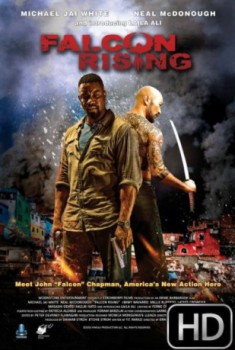

Falcon Rising (2014)



País:Estados Unidos, 103 minutos.
Idiomas:Inglés
GénerosAventuras, Acción
Director/es:Ernie Barbarash
Guionistas:Y.T. Parazi
Códec de vídeo:Unknown
Número: 3654
TomatoMeter:

--

--
Clasificación IMDb:


5.8/10 (349 votos)
Certificación:
Argumento:
Chapman is an ex-marine in Brazil's slums, battling the yakuza outfit who attacked his sister and left her for dead.
Reparto
Michael Jai White (Como John 'Falcon' Chapman), Neal McDonough (Como Manny Ridley), Lateef Crowder (Como Carlo Bororo), Laila Ali (Como Cindy Chapman), Hazuki Kato (Como Tomoe)
Medio: Archivo de video,
Localización: D:\PELICULAS\ACTORES\Michael Jai White\Falcon Rising (2014)\Falcon Rising (2014).mp4
Prestado: No
Rel. aspecto: Unknown